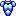
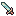
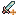

NeoQuest II: Non-Player Characters
Non-Player characters are those characters that you can't play as - they mainly talk or trade with you, or give quests.
Meridell | Terror Mountain | Lost Desert | Haunted Woods | Faerieland
| NPC Name | Description | Abilities |
|---|---|---|
| Chia Oscuro (town) | ||
| Ynhar | Just another NPC. | |
| Stolfr | Just another NPC. | |
| Aunoll | NQII was released in a hurry | |
| Lveydi | Just another NPC. | |
| Ullistl | A free inn... sort of pointless. | |
| Girjor | Just another NPC. | |
| Thaddeus | Look, he makes sense! | |
| Jarasth | Hmm... goodies to sell! |   |
| Sthora | And your quest here is... | |
| Moutainside Inn (Level 1) (town) | ||
| Faria | Just another NPC | |
| Evyas | Just another NPC. | |
| Orsing | Just another NPC. | |
| Munar | The Inn-keeper (200 gp per night) | |
| Borhal | Where are his manners? | |
| Talinia | "Captain!" |  |
| Mountainside Inn (Level 2) (town) | ||
| Hjala | Just another NPC. | |
| Illun | Adventurer, yeah, right! | |
| Wunarka | "A shortcut is the longest distance between two points" | |
| Eridin | He's writing a story! | |
| Happy Valley (town) | ||
| Jualie | Talk to her first! | |
| Niacha | Bring the lost boy home! | |
| Hausaun | Likes the cold. | |
| Etigand | An admirer! | |
| Candar | Not a quest, just something different. | |
| Fentasa | Loves to skate. | |
| Jemico | Just another NPC. | |
| Madys | Advertising, advertising, advertising. | |
| Vanne | Potions Merchant. | |
| Tinoryl | Innkeeper (225 gp per night, discounted) | |
| Eviexa | Just another NPC. | |
| Zarisav | Gives you a sense of purpose | |
| Henago | Just another NPC. | |
| Bradro | Just another NPC | |
| Dembrind | Just another NPC. | |
| Arisso | Weapons Merchant | |
| Utolok | Armor smith | |
| Panari | Just another NPC. | |
| Koli | Just another NPC | |
| Adventurers' Camp (town) | ||
| Allden | A conviniently located free inn. | |
| Five | Quite the optimist, isn't she? | |
| Thugda | The troubled leader. | |
| Malarkey | Grumpy! | |
| Lost Caves (Level 4) (wilderness) | ||
| The Snowager | "You are a program?" asked Neo... | |
| Legend | |||
|---|---|---|---|
| Talk | Sells Armor | ||
| Trade | Sells Potions | ||
| Joins your Party | Sells Weapons | ||
| Rest (inn) | Quest or Interesting | ||